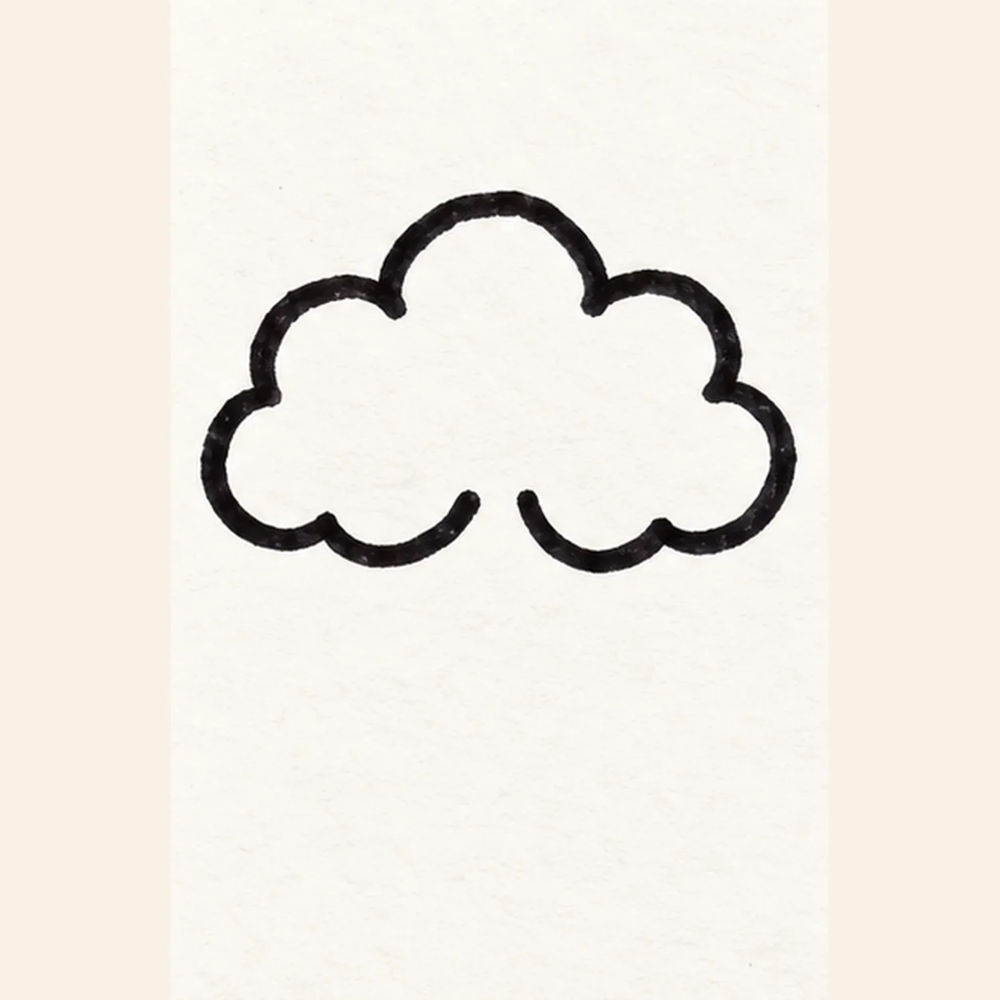
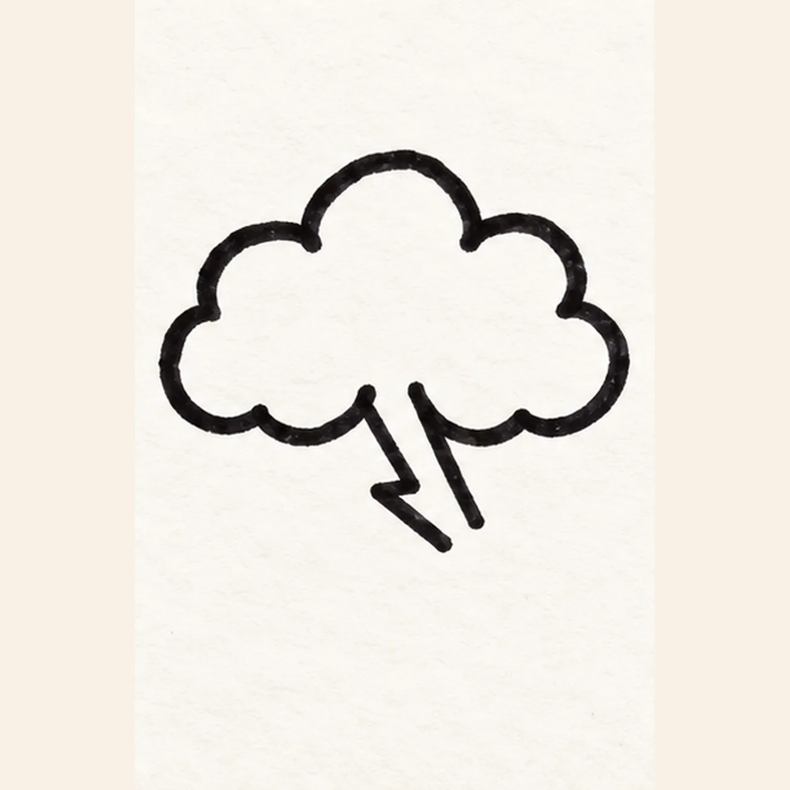
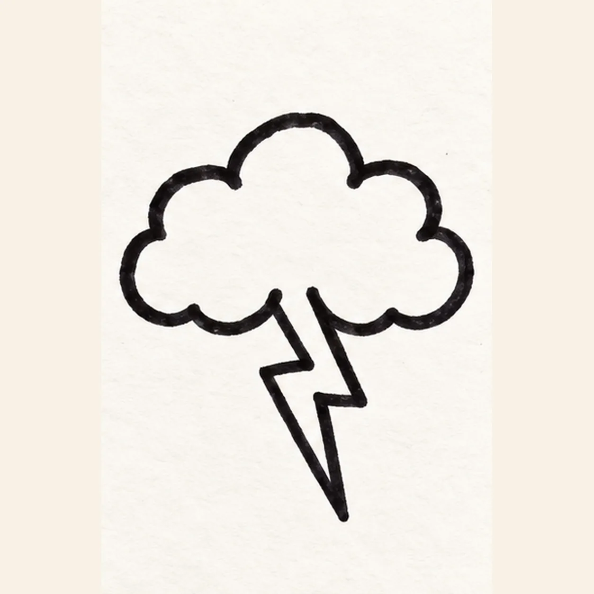
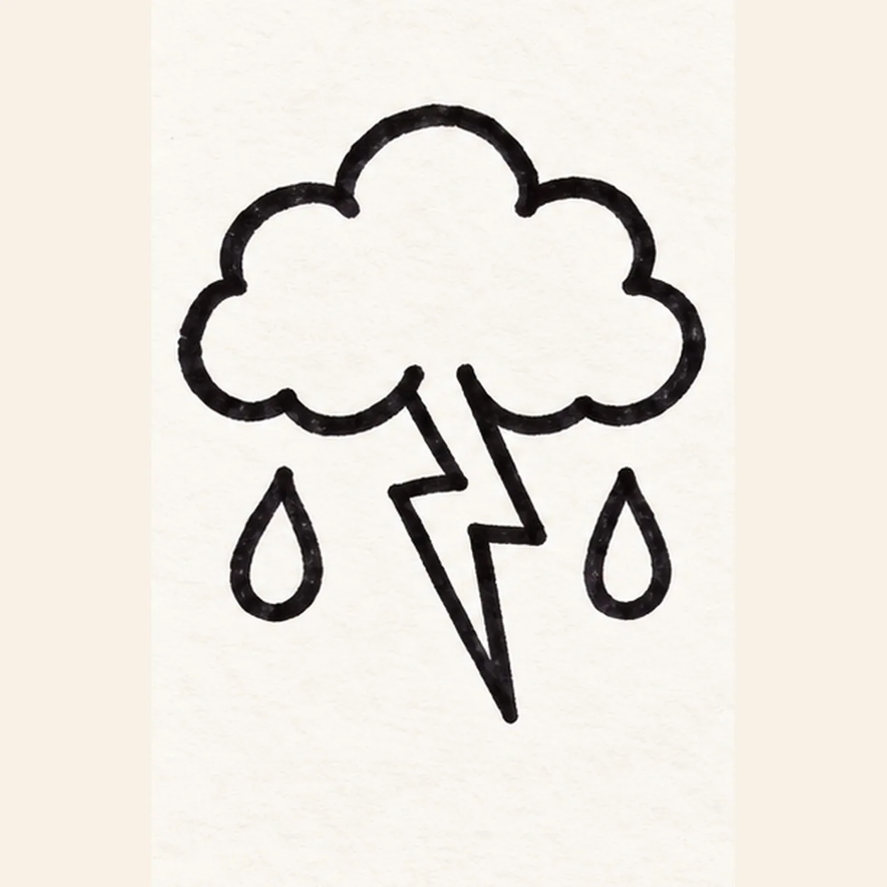
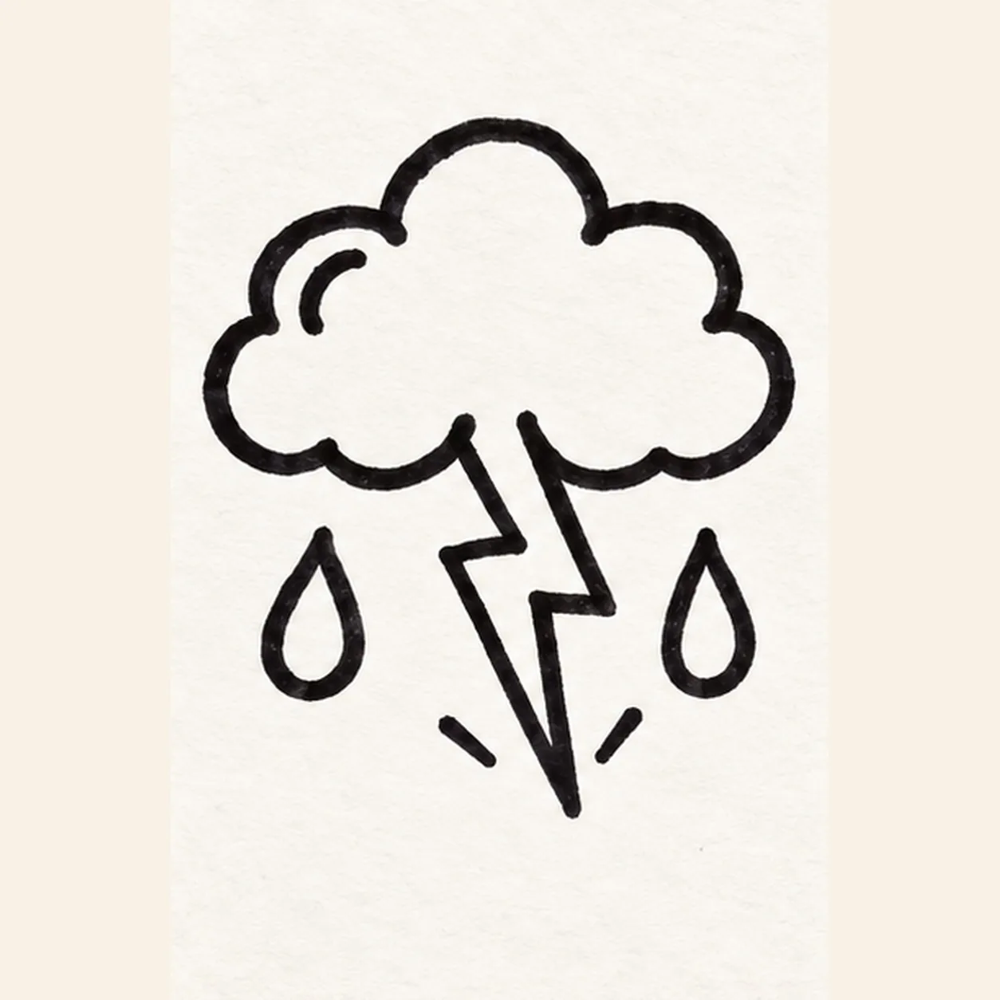

Felt-tip marker mode
Let's draw a lightning cloud
Treat this as one playful practice round: sketch the idea loosely, simplify the shapes, then commit with confident marker outlines and bright fills.
-
01

Shape the storm cloud
Draw one broad puffy cloud with three top humps and a scalloped base. Leave a short gap at the bottom center for the lightning bolt.
Marker tip: Keep the two open ends near the base about one marker width apart.
-
02

Start the lightning zigzag
From the reserved center gap, draw two thick angular strokes down and right, leaving the lower end open for the next pointed turn.
Marker tip: Stop the two lower ends open so the final point has room to turn.
-
03

Point the bolt downward
From the open lower end, turn left in a sharp zigzag and pull a long pointed tip down. Return the second edge upward to close the bold bolt.
Marker tip: Make the lower tip long enough to read at thumbnail size; keep the two edges apart.
-
04

Hang two raindrops
Draw one separate chunky raindrop below the cloud on the left and one on the right. Keep both clear of the centered lightning bolt.
Marker tip: Balance the two drops at the same height and leave a clear gap around the bolt.
-
05

Add a curl and sparks
Draw one short curved cloud curl inside the left lobe. Place exactly two short comic dashes outside the bolt tip without touching the raindrops.
Marker tip: Keep the curl inside the cloud and the two dashes separate from the tip.
-
06

Color the storm burst
Fill the established cloud with blue-violet marker, the closed bolt with yellow, and both raindrops with teal. Add magenta to the two dashes and keep the cloud curl visible; do not move or add contours.
Marker tip: Pull marker strokes in one direction and leave a few tiny white streaks as paper highlights.